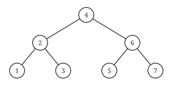
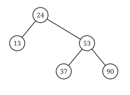
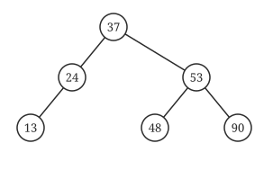

408
408三种树解决同一个问题：查找要快。BST 是原型，AVL 是强平衡，红黑树是弱平衡。大纲只要求 BST 和 AVL 会手操作，红黑树只考性质和简单插入。
其之壹二叉搜索树 BST
左 < 根 < 右。所以 中序遍历就是递增序列，这也是判定 BST 的标准方法。
BST 三个操作
查找：比根小往左，比根大往右。平均 O(log n)，最坏（退化成链）O(n)。
插入：查找失败的那个位置就是插入位置，新结点必定是叶子。
删除：叶子直接删；只有一棵子树的让子树顶替；有两棵子树的，用中序后继（右子树最左）或中序前驱的值替换，再删那个结点。
其之貳平衡二叉树 AVL
每个结点左右子树高度差（平衡因子）不超过 1。
高度为 h 的 AVL 最少结点数
N(h) = N(h−1) + N(h−2) + 1，N(0)=0，N(1)=1。
序列：1, 2, 4, 7, 12, 20, 33, 54……
n 个结点的 AVL 高度是 O(log n)，查找也是 O(log n)。
四种旋转
插入后沿路径向上找到第一个失衡的结点，称为最小不平衡子树的根 A。判断新结点插在 A 的哪个方向：
| 类型 | 新结点插在 | 做法 |
|---|---|---|
| LL | A 左孩子的左子树 | A 右旋一次 |
| RR | A 右孩子的右子树 | A 左旋一次 |
| LR | A 左孩子的右子树 | 先左旋 B，再右旋 A（中间那个升上去） |
| RL | A 右孩子的左子树 | 先右旋 B，再左旋 A（中间那个升上去） |
不用背左旋右旋
LL / RR：中间那个结点升上去当根。LR / RL：最下面那个（新的中间值）升上去当根。三个结点排大小，中间值当根，另外两个当左右孩子，其余子树按大小挂回去。这样永远不会转错。
AVL 删除
删除可能让失衡一路传到根，最多旋转 O(log n) 次；插入至多调整一次（两次旋转）。这是 AVL 不如红黑树的地方。
其之參红黑树
AVL 太「较真」，插入删除老是要旋转。红黑树放宽要求：不要求严格平衡，保证最长路径不超过最短路径的 2 倍。
红黑树五条性质
- 每个结点非红即黑。
- 根是黑的。
- 叶（NIL 空结点）是黑的。
- 红结点的孩子必须是黑的（不能连续两个红）。
- 任一结点到其所有后代 NIL 的路径上，黑结点数相同（称为黑高 bh）。
红黑树的结论（选择题就考这些）
① 最长路径 ≤ 2 × 最短路径（最短全黑，最长红黑相间）。
② n 个内部结点的树高 h ≤ 2log₂(n+1)。
③ 黑高为 bh 的子树至少有 2^bh − 1 个内部结点。
④ 根黑高为 k 时，内部结点数最少 2^k − 1（全黑满二叉树），最多 2^(2k) − 1（红黑相间的满二叉树）。
⑤ 新插入的结点染红（染黑会破坏性质 5，染红只可能破坏性质 4，好修）。
⑥ 删除或插入的调整都是 O(log n)，旋转次数至多常数次。
插入的调整（只需要会这张表）
新结点 z 是红的，只有当父亲也是红的时候才需要调整。此时看叔叔的颜色：
| 叔叔 | 操作 |
|---|---|
| 红色 | 父、叔变黑，爷爷变红；把爷爷当成新的 z 继续向上（若爷爷是根则再变黑） |
| 黑色（或 NIL），LL/RR 型 | 旋转一次（像 AVL），父变黑、爷变红 |
| 黑色（或 NIL），LR/RL 型 | 旋转两次（像 AVL），z 变黑、爷变红 |
判断「要不要旋转」
叔叔红：大家一起换颜色，把问题往上推。叔叔黑：换颜色解决不了，只能旋转。旋转方向和 AVL 完全相同，所以你不需要再学一遍。
领域展开
BST：中序递增；删两子树用后继替换。
AVL：N(h) = N(h−1)+N(h−2)+1；三结点排大小，中间值当根。
红黑：根黑、红不连红、黑高相同；h ≤ 2log₂(n+1)；叔红变色，叔黑旋转。
其之肆实战
再深一层
A: 95 →22 →91 →24 →94 ✘ (−∞,95)(22,95)(22,91)(24,91) ∌ 94 ← 走到 24 时上界已锁死在 91 B: 92 →20 →91 →34 →88 →35 (−∞,92)(20,92)(20,91)(34,91)(34,88) ∋ 35 ✔ C: 21 →89 →77 →29 →36 →38 (21,∞)(21,89)(21,77)(29,77)(36,77) ∋ 38 ✔ D: 12 →25 →71 →68 →33 →34 (12,∞)(25,∞)(25,71)(25,68)(33,68) ∋ 34 ✔📌 只盯"拐点"更快：查找路径每"拐一次弯"就锁死一个边界——向左拐锁上界、向右拐锁下界，锁上就永不松开。A 在 91 处向左拐（下一个是 24），上界从此是 91，后面出现 94 立刻违规。
📌 本题与 7.2 的 2015 真题（折半查找的比较序列）判法一模一样——因为折半判定树本身就是一棵 BST。三道题（7.2-21、7.3-05、7.3-25）共用一个模板，务必练成条件反射。
⚠️ 别只检查"是否单调"：BST 的查找路径本来就可以来回震荡（B、C、D 都在震荡），合法与否取决于震荡是否始终落在收紧的区间内。
Ⅰ. 若 v 是 T₁ 的叶结点，则 T₁ 与 T₃ 不同
Ⅱ. 若 v 是 T₁ 的叶结点，则 T₁ 与 T₃ 相同
Ⅲ. 若 v 不是 T₁ 的叶结点，则 T₁ 与 T₃ 不同
Ⅳ. 若 v 不是 T₁ 的叶结点，则 T₁ 与 T₃ 相同
再深一层
情形一：v 是叶结点 删 v ⟹ 只是把这片叶子摘掉，其余结点纹丝不动 插 v ⟹ 查找路径与当初插入它时完全相同，又挂回同一个位置 ⟹ T₃ = T₁ ✅ Ⅱ 对、Ⅰ 错 情形二：v 不是叶结点 删 v ⟹ 用它的中序前驱/后继上移【顶替】它的位置（树形已改变） 插 v ⟹ v 只能重新挂成一片【叶子】，再也回不到原来的内部位置 ⟹ v 的层次一定变深，T₃ ≠ T₁ ✅ Ⅲ 对、Ⅳ 错📌 一句话记忆："叶子摘了能原样贴回去，内部结点摘了就只能降级当叶子。"
⚠️ 本题与 2019 真题（第 31 题，AVL 版）必须成对做，结论完全不同：
删叶结点再插回 删非叶结点再插回 BST (2013) 一定相同 一定不同 AVL (2019) 【可能】不同 【可能】相同、也可能不同 原因：AVL 的删除与插入都可能触发旋转，把"确定的结论"全部打散成"可能"所以 2013 题的四个选项用"相同/不同"这种绝对词是成立的，2019 题的绝对词反而全是错的。
排除法：A（12）高度 6 而结点数 12 的树无法达到平衡；C（32）结点偏多（第 6 层只有最左叶子的完全二叉树恰好 32 个结点，虽满足平衡但显然可以再删去部分结点仍平衡，不是最少结点情况）；D 同理。
再深一层
平衡因子恒为 1 ⟹ 每个结点的左子树都恰好比右子树高 1
⟹ 这正是递推 n_h = n_{h−1} + n_{h−2} + 1 描述的那棵树（斐波那契树）
h : 1 2 3 4 5 6
n_h: 1 2 4 7 12 20 ⟹ 答案 20 ✅📌 这道真题就是第 11、12 两道课后题的真身：三题共用同一张表，只是问法不同（给结点数问高度 / 给高度问最少结点 / 给"平衡因子全为 1"问结点数）。把 1、2、4、7、12、20、33 这七个数背死，三题全解决。📌 为什么"平衡因子全为 1"就一定最省：平衡因子只能取 0、±1；要让同样高度用最少结点，就要让每个结点的两棵子树尽量不平均——差 1 已是极限，差 1 且方向一致（都向左），得到的就是唯一的一棵最省树。
⚠️ 选项 C（32）的迷惑性最强：32 = 2⁵，很像"某种满二叉"。但那是"高度 6 的完全二叉树"级别的结点数，属于"多"的一端，与题干的"平衡因子全为 1"完全相反。

再深一层
插1 1 插2 1(·,2) 插3 失衡 ⟹ RR 左单旋 ⟹ 2(1,3) 插4 2(1,3(·,4)) 插5 以 3 为根失衡 ⟹ RR ⟹ 2(1,4(3,5)) 插6 以 2 为根失衡 ⟹ RR ⟹ 4(2(1,3),5(·,6)) 插7 以 5 为根失衡 ⟹ RR ⟹ 4(2(1,3),6(5,7)) ← 满二叉树 ✅ 平衡因子：4、2、6 都是 0；1、3、5、7 是叶结点（平衡因子也是 0，但不是分支结点）📌 本题唯一的陷阱在"分支结点"三个字：满二叉树里 7 个结点的平衡因子全是 0，如果不看"分支"两字就会答 7（无此选项，于是有人退而选 4 或乱选）。分支结点 = 非叶结点 = 有孩子的结点 = 4、2、6，共 3 个。
📌 与第 15 题（1~1024）是同一条规律的大小两版：升序插入 AVL 全程只触发 RR 左单旋，每转一次就把树"压平"一次；插到 2ᵏ−1 时刚好收成满二叉树。第 15 题的 1023 就是这里的 7 放大到 k=10。
⚠️ 与第 20 题（同样是 1~7，但插进红黑树）对照着看：红黑树的结果是 2黑(1黑, 4红(3黑, 6黑(5红,7红))) 那样一棵右重的树，远没有 AVL 这么整齐——这就是"高度平衡"与"适度平衡"最直观的差别。


再深一层
① 找插入位置：48 > 24 → 右；48 < 53 → 左；48 > 37 → 挂在 37 的右边 ② 往上找第一个失衡点：37→53(bf=−1，还行)→24 左高1、右高3 ⟹ bf=−2 ⟹ A = 根 24 ③ 判型：新结点在 A 的【右孩子(53)的左子树(37 那一支)】⟹ RL 型 RL 的结果是【C 上位】——这里 C 就是 37 ⟹ 37 变成新的根📌 双旋结果的"一步到位口诀"：LR / RL 双旋后，站上新根位置的既不是 A 也不是 B，而是最里层的那个 C；C 原来的左子树给 A、右子树给 B（本题 C=37 没有子树，于是 A=24、B=53 直接成为它的左右孩子）。记住"C 上位"，这类题就再也不用一步步转了。
24(A) 37(C)
/ \ RL / \
13 53(B) ===> 24(A) 53(B)
/ \ / / \
37(C) 90 13 48 90
\
48⚠️ 最容易选错的是 B（24, 48）——把"48 是新插入的、应该挂在 37 下面"这个旋转前的印象带进了旋转后。旋转的本质就是让 37 越过 53 上位，48 反而被甩去做 53 的左孩子。⚠️ 2021 真题（第 33 题）与本题是同一个模板（也是 RL、也是问"根/孩子是谁"）。两题一起做，"C 上位"这条口诀能省掉两次完整旋转。
Ⅰ. 若 v 是 T₁ 的叶结点，则 T₁ 与 T₃ 可能不相同
Ⅱ. 若 v 不是 T₁ 的叶结点，则 T₁ 与 T₃ 一定不相同
Ⅲ. 若 v 不是 T₁ 的叶结点，则 T₁ 与 T₃ 一定相同
· 若删除的是 T₁ 的叶结点：删除后若不失衡（不调整），再插入此结点得到的 T₃ 与 T₁ 相同；若删除后失衡而发生了调整，再插入得到的 T₃ 与 T₁ 可能不同 → 说法 Ⅰ 正确。
· 说法 Ⅱ、Ⅲ 都太绝对，各举反例即可：删非叶结点且删除、插入均未导致调整时 T₁ ≠ T₃（该结点从非叶变成了叶）；删非叶结点且删除和插入后都发生了调整时，该结点有可能通过旋转重新变成非叶结点，此时 T₁ 与 T₃ 相同。
再深一层
2013 真题(BST) 2019 真题(AVL) 删叶再插回 一定相同 【可能】不同 ← 删完可能触发旋转，形态已变 删非叶再插回 一定不同 可能相同、也可能不同 差别的唯一来源：AVL 的删除/插入都可能旋转，而旋转会重排层次Ⅱ、Ⅲ 各自的反例（程序实际找到的）：
Ⅱ「非叶一定不同」的反例：插入序 19,58,5,18,36,20,26,29 得 19(5(·,18), 36(26(20,29), 58)) 删掉【非叶结点 26】再插回 ⟹ 又得到完全相同的树 ⟹ Ⅱ 错 （删 26 时由后继 29 顶上，插回 26 时旋转又把 26 送回了原位） Ⅲ「非叶一定相同」的反例：随便删一个不触发旋转的非叶结点， 它插回来只能当叶子 ⟹ 层次变深 ⟹ 不同 ⟹ Ⅲ 错📌 Ⅰ 的反例（"删叶结点也会变样"）：程序找到的一例是
30(14(6(·,8),17), 47(35(34,37),54(52,·)))，删掉叶结点 17 触发调整，再把 17 插回后得到 30(8(6,14(·,17)), …)——14 与 8 的父子关系整个换了位。⚠️ 做这一类"Ⅰ、Ⅱ、Ⅲ"题的通用心法：看到"一定"就去找反例，看到"可能"就去找一个正例。本题 Ⅰ 用"可能"、Ⅱ Ⅲ 用"一定"，措辞本身已经泄露了答案的方向。